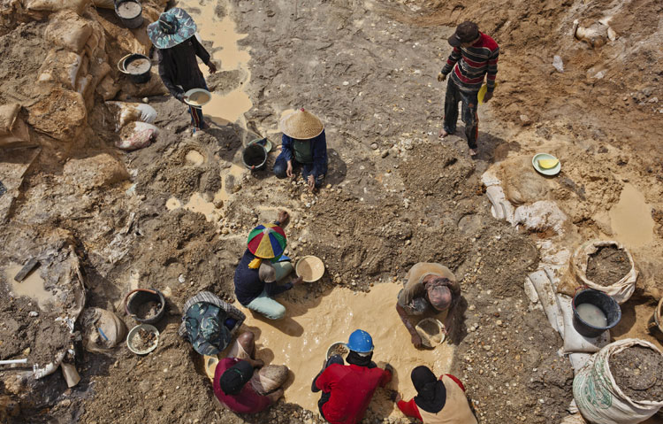
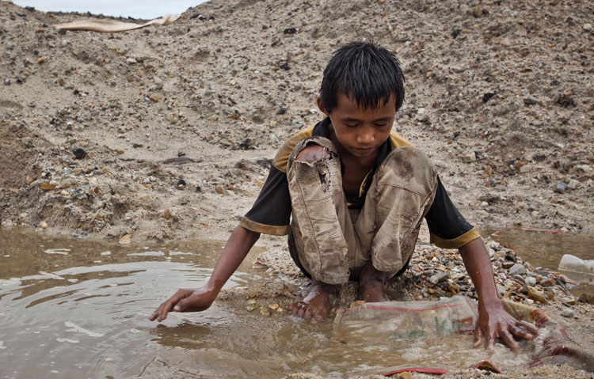
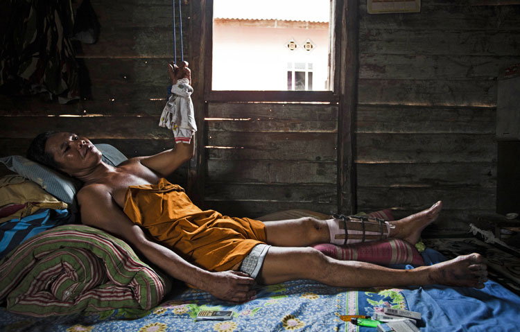
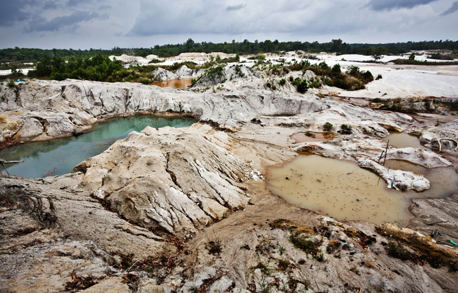
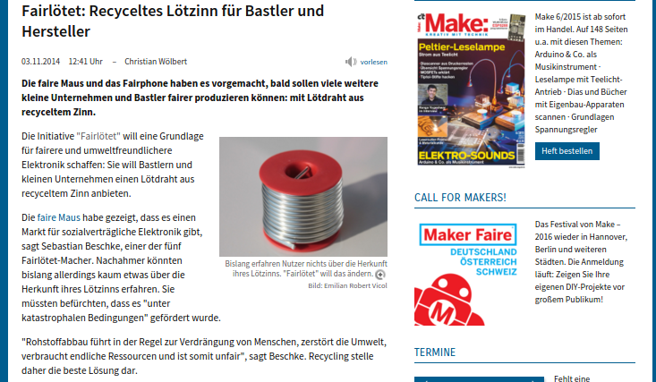
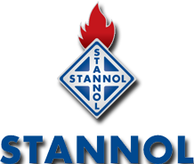
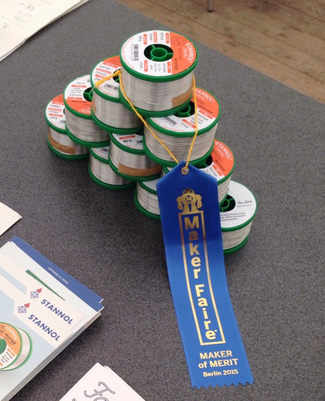

How YOU can improve fairness of hardware
32C3 - Hamburg 2015
Presented by the Fairlötet team / fairloetet.de
The problem with tin?
The quick versionInformal artisanal mining
 Miners working at a tin ore mine in Tanjung Pesona, District Sungai Liat, Bangka, Indonesia.Child labor
 Febri Andika, a young tin minerHealth and safety
 Suge, a small-scale independent tin miner, suffered a broken arm and leg when the pit he was working in collapsed. His three friends were killed.Environment
 A disused tin mine near Bencah village.The dirty open secret:
This concerns all your hardware
What we did
- went to Maker Faire to tell people about the issues
- brainstorming workshop on improving fair mouse
- tin as low hanging fruit?
- maybe get recycled tin?
- where to begin?
Start a club

Get press coverage
First Contact
A year later
Lesson learned
Social issues are pervasive in the electronics industry…
BUT there are lots of smaller companies that want to do the right thing!
Plant the seed!
Homework
-
Make another company a part of the movement
(Maybe they just need some encouragement)
- Care about your supply chain and let people know
Our movement needs moar networking!
Join our meetup
Day 3, 15:00 at the FairLötet assembly
Contact us
post@fairloetet.de, Twitter: @fairloetet